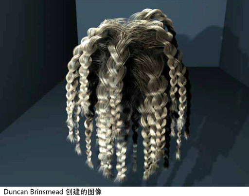

可以对单个毛囊编辫，也可以对所有毛囊编辫。由于“编辫”(Braid)属性位于 follicleShape 节点，因而必须选定毛囊。

头发编辫
- 选择所需毛囊。请参见选择头发、毛囊、曲线和 CV。
- 执行下列操作之一：
- 如果对单个毛囊编辫，请选择毛囊，然后在“通道盒”(Channel Box)中将“编辫”(Braid)设定为启用状态。或者，在所需毛囊上绘制“编辫”(Braid)属性。（请参见nHair > 绘制毛囊(nHair > Paint Hair Follicles)）。
- 如果对整个头部的头发编辫，请选择所有毛囊（请参见选择头发、毛囊、曲线和 CV），并在“通道盒”(Channel Box)中将编辫设置更改为启用状态。这会影响所有选定毛囊。（如果在“通道盒”(Channel Box)中看不到“编辫”(Braid)，则在“大纲视图”(Outliner)中，按住Ctrl 键 (
 ) 单击，然后在该毛囊上按住Shift 键 (
) 单击，然后在该毛囊上按住Shift 键 ( ) 单击。）
) 单击。）
- 为了让编辫具有逼真效果，请调整其他“渲染属性”(Render Attributes)的设置。
有关头发编辫的详细信息和工作流建议，请参见创建马尾辫和编辫。